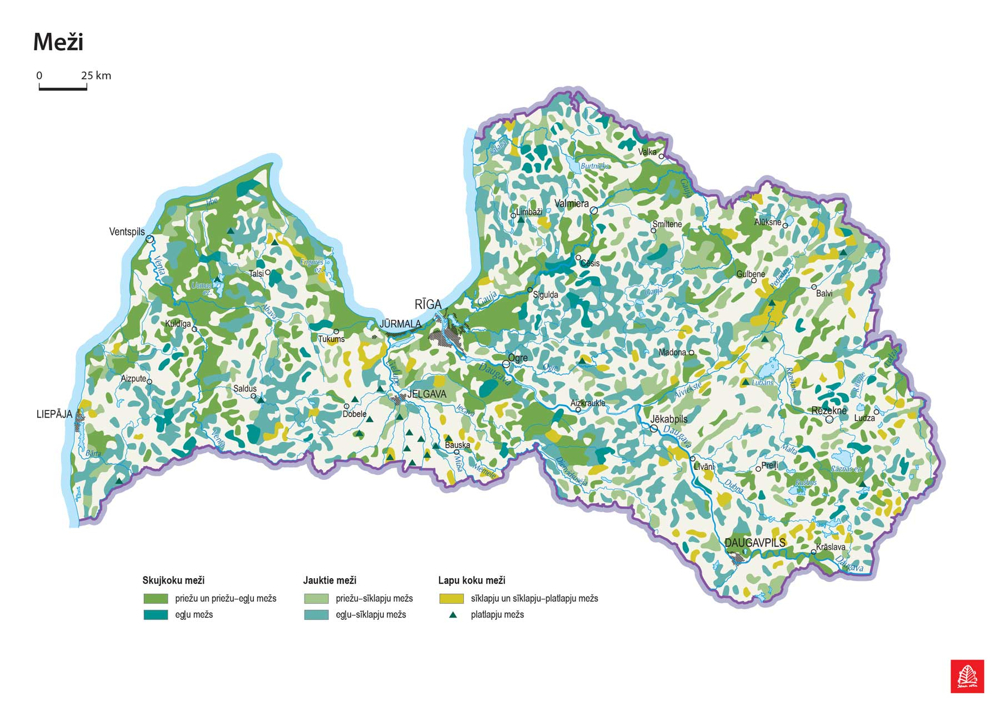

Meži veido aptuveni 52% no Latvijas teritorijas, kas padara tos par vienu no galvenajiem dabas resursiem. Tie nodrošina skābekļa ražošanu, klimata regulēšanu un saglabā bioloģisko daudzveidību.
Latvijas meži sastāv no dažādām koku sugām, no kurām visbiežāk sastopamas priede, egle un bērzs. Zemāk tabulā redzams galveno koku sugu procentuālais sadalījums.
| Koku suga | Procentuālais daudzums mežos |
|---|---|
| Priede | 33% |
| Egle | 18% |
| Bērzs | 30% |
| Baltalksnis | 7% |
| Apse | 7% |
| Melnalksnis | 4% |
| Citi koki | 1% |
Dati ir aptuveni un balstīti uz 2022. gada statistiku.
Mežs ir ekosistēma, kurā dominējošā augu forma un nozīmīgākais organiskās masas ražotājs ir koki. Mežiem ir liela nozīme vides veidošanā, nodrošinot daudziem augiem un dzīvniekiem mājvietas, sniedzot iespējas iedzīvotājiem atpūsties un doties pastaigās. Tāpat mežs ir nozīmīgs izejvielu avots tautsaimniecībā.
